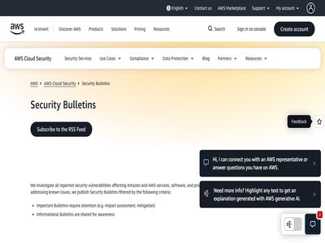
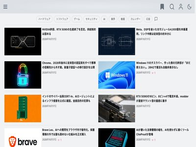
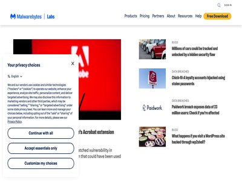
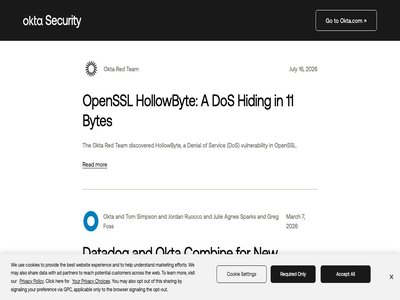
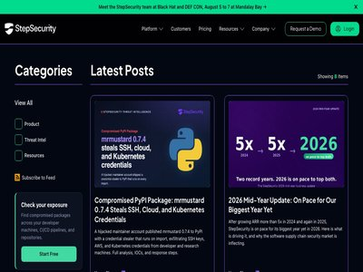
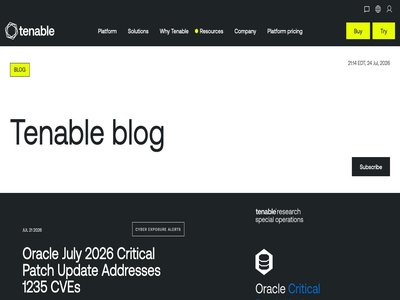
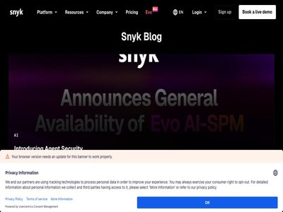
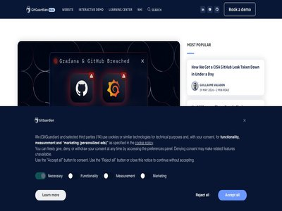
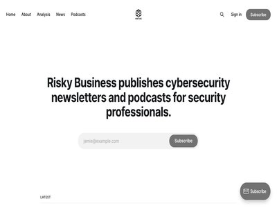
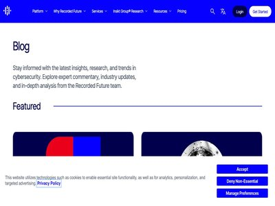

October 24, 2026 · 1 article

Trimble Cityworks Remote Code Execution Attack
October 24, 2026
What is the Attack? Trimble Cityworks contains a deserialization vulnerability. This could allow an authenticated user to perform a remote code execution attack against a custom... (FortiGuard Labs)
October 23, 2026 · 58 articles

Abandoned Popcorn Time app exposed millions of device to RCE attacks
October 23, 2026
Researchers remotely disabled a vulnerable updater in the abandoned Time4Popcorn app, a fork of the Popcorn Time BitTorrent client, closing a security flaw that could have allow... (BleepingComputer)

(Reliable)? php2shell exploitability, (Fri, Oct 23rd)
October 23, 2026
Yesterday everyone was running around like crazy (me included :) because of the php2shell vulnerability. (SANS ISC)

CVE-2026-115845 - Incomplete validation in the run_script Python sandbox in AWS MCP Server
October 23, 2026
Bulletin ID: 2026-149-AWS Scope: AWS Content Type: Important (requires attention) Publication Date: 10/23/2026 12:00 PM PDT Description: AWS MCP Server is a managed server that... (AWS Security Bulletins)

Threat Brief: Critical Vulnerabilities in PHP: CVE-2026-109618, CVE-2026-109619 (Updated October 23)
October 23, 2026
CVE-2026-109618 and CVE-2026-109619 are Critical vulnerabilities in PHP, a scripting language used globally for web servers and CMS systems. The post Threat Brief: Critical Vuln... (Palo Alto Networks Unit 42)
Microsoft Teams to get AI-powered, context-aware phishing detection
October 23, 2026
Microsoft has announced plans to add AI-powered phishing detection to Teams messages starting in early November 2026. [...] (BleepingComputer)

BlackX UEFI Bootkit Bypasses Secure Boot on Patched Windows Systems Missing Revocations
October 23, 2026
Diplomatic organizations in Central Asia have been targeted by a sophisticated new Unified Extensible Firmware Interface (UEFI) bootkit called BlackX. The activity, which single... (The Hacker News)
Inside the LiteLLM 1.107.0 supply chain compromise: Credential theft through Python startup hooks
October 23, 2026
Microsoft Threat Intelligence analyzes the LiteLLM 1.107.0 compromise, including Python startup hooks, credential theft, remote code loading, detections, and mitigations. The po... (Microsoft Security Blog)

PHP Warns of New Code Execution Flaw Days After PHP2Shell Patches
October 23, 2026
PHP warns of a new, unlikely code execution flaw, CVE-2026-115560, and advises disabling session upload progress until a fix is released. PHP has warned of a new code execution... (Security Affairs)

Bringing post-quantum cryptography to geographically fenced key management
October 23, 2026
Cloudflare's new post-quantum GeoKey Manager protects geographically fenced decryption keys from harvest now, decrypt later attacks. Learn how we redesigned our cryptography sta... (Cloudflare Blog)
Ruby Fixes Three Regex Engine Bugs Responsible for Four Critical GitLab RCE Flaws
October 23, 2026
Ruby has released versions 4.0.9, 3.4.12, and 3.3.13 to fix three bugs in Onigmo, the regular expression engine built into the language. The bugs lie behind four critical securi... (The Hacker News)
Exposed Infrastructure Reveals How Ransomware Affiliates Used AI Agents to Execute Intrusions
October 23, 2026
Cybersecurity researchers have discovered an artificial intelligence (AI)-driven intrusion ecosystem run by affiliates of the INC and The Gentlemen ransomware groups. Central to... (The Hacker News)
CVE-2026-87912 and CVE-2026-87913: Missing S3 bucket ownership verification in the AWS Security Agent plugin for aws-agents-for-devsecops and MCP Server
October 23, 2026
Read this article (AWS Security Bulletins)
CVE-2026-87911
October 23, 2026
Read this article (AWS Security Bulletins)
CVE-2026-85788 - Issue with awslabs mysql-mcp-server
October 23, 2026
Read this article (AWS Security Bulletins)
CVE-2026-84942 - Stored Cross-Site Scripting via Vega Expression Function Bypass in OpenSearch Dashboards
October 23, 2026
Read this article (AWS Security Bulletins)

AI Tools Are Generating Massive Attacks for Little Cost
October 23, 2026
One campaign targets 105 sites using open-weight models; in another, public models gained full domain control for $12. Cyber-defense will have to change. (Dark Reading)

PHP2Shell: What This Week Tells Us About the Web We Built
October 23, 2026
The week the web’s plumbing failed On Wednesday afternoon, most of the world’s websites became exploitable at the same moment. The reason was PHP, the thirty-year-old language t... (Orca Security Blog)
Microsoft: Windows Server 2016 reaches end of support in January
October 23, 2026
Microsoft says Windows Server 2016 will stop receiving security updates after it reaches the end of support in January 2027. [...] (BleepingComputer)
Quest Diagnostics confirms data breach exposed patient records
October 23, 2026
American clinical laboratory company Quest Diagnostics disclosed that patient records have been exposed after a threat actor gained unauthorized access to its Quanum LSM system.... (BleepingComputer)

UK proposes 14-year jail terms for subsea cable saboteurs
October 23, 2026
Damaging a cable on the seabed off the UK coast could soon cost someone 14 years of their life behind bars, under plans the British government published this week. The proposal... (Help Net Security)
PHP2Shell: Millions of Attacks, No Confirmed Successful Exploits Yet
October 23, 2026
PHP2Shell attacks have surged into the millions, but no successful exploitation is confirmed. Patch it immediately. On October 21, PHP released emergency patches for two critica... (Security Affairs)

Widespread Token-Spraying Attacks Target Microsoft 365 Accounts For Email Compromise
October 23, 2026
Security researchers identified attempts to access corporate networks which have been linked to a major Microsoft 365-targeted BEC campaign using phishing, stolen session tokens... (Infosecurity Magazine)

Attackers Exploit Third Arista VCO Zero-Day in Four Months
October 23, 2026
The critical-severity SQL injection flaw allows attackers to access privileged internal functionality and gain operator privileges. The post Attackers Exploit Third Arista VCO Z... (SecurityWeek)
11 Million Impacted by Capcom Data Breach
October 23, 2026
The hackers stole 11 million email addresses from CAPCOM ID and changed the login passwords for 196 accounts. The post 11 Million Impacted by Capcom Data Breach appeared first o... (SecurityWeek)

Why Organizations Secure AI Agents with Falcon Guardian
October 23, 2026
(CrowdStrike Blog)

PHP2Shell Takes Over 200 Japanese Services and 32 UK Government Services Offline: Attacks Predate Patches
October 23, 2026
PHP2Shell vulnerabilities have taken more than 200 web services offline in Japan and blocked 32 government services in the UK. Attacks began four days before patches were releas... (Joho no Todai)
Senators say targeted ads are a security risk. Ad groups say the critics are off base.
October 23, 2026
Citizen Lab’s AdFection findings have senators pushing for industry improvements, while IAB Europe and Google defend their vetting practices. The post Senators say targeted ads... (CyberScoop)
PHP shares mitigation for new RCE vulnerability with no patch
October 23, 2026
The PHP security team has shared mitigation measures for a new remote code execution vulnerability that affects systems with non-default configurations and has no patch. [...] (BleepingComputer)
HPE Aruba Wireless LAN Software Has 72 Vulnerabilities, Eight Rated CVSS 10.0: Check Fixes and Management Networks
October 23, 2026
Seventy-two vulnerabilities have been found in HPE Aruba Networking's AOS-8/AOS-10 wireless LAN software, including eight rated the maximum 10.0 under CVSS v3.1. They include un... (Joho no Todai)
In Other News: Tor Exit Relays Hijacked, Banks Spot Rogue AI Agents, Self-Rebuilding macOS Ransomware
October 23, 2026
Noteworthy stories that might have slipped under the radar: Russia’s APT28 hit NATO defense firms, PingCAP source code stolen, ShinyHunters negotiator probe. The post In Other N... (SecurityWeek)
You gave your AI agent access, but who is giving it orders?
October 23, 2026
AI agents can be manipulated through malicious emails, websites, and plugins into executing commands, stealing data, or deleting files using their legitimate permissions. Gen Di... (BleepingComputer)
Why Caribbean Threats Cascade Into Global Cyber-Risk
October 23, 2026
The region is demonstrating what happens when exploits accelerate but assurance does not. (Dark Reading)
PHP Vulnerability Wrap-Up, (Fri, Oct 23rd)
October 23, 2026
This morning, we returned to Infocon Green. As usual, we are raising the Infocon to alert you to emerging situations requiring immediate attention. PHP fit that description. By... (SANS ISC)
Cyber Insurance's New Reality: Underwriting Isn't Enough
October 23, 2026
Rising AI, social engineering, and cloud risks are pushing carriers beyond risk transfer and deeper into cybersecurity itself. (Dark Reading)
Infostealer riding the AI Train
October 23, 2026
Key Points Introduction Infostealers commonly target browser passwords, session cookies, and cryptocurrency wallets. This malware combines those established capabilities with de... (Check Point Research)
HPE patches eight max severity RCE and auth bypass AOS flaws
October 23, 2026
Hewlett Packard Enterprise (HPE) released security updates to patch 72 vulnerabilities in the Aruba Operating System (ArubaOS), including eight maximum-severity authentication b... (BleepingComputer)
VeloCloud Orchestrator Flaw CVE-2026-114625 Turns Read-Only Access Into Full Control: Arista Confirms Exploitation
October 23, 2026
A SQL injection flaw in VeloCloud Orchestrator can turn the lowest read-only privileges into control of the entire management platform. Rated CVSS 9.9 and already exploited acco... (Joho no Todai)
AI Agents as Insider Threats: Inside Microsoft's Bet on a Unified Security Stack
October 23, 2026
Microsoft's Project Perception adds Guardian Agents to monitor and contain anomalous AI agents, but experts warn that policing unpredictable agents with other agents may multipl... (Dark Reading)

Torvalds: AI is fine for competent devs, but spare us the 'drive-by' patches
October 23, 2026
Kernel maintainers stop asking who used AI, as long as the code is good (The Register - Security)
Russian-Linked Hackers Used New Mesh Network Backdoor in Destructive Ukraine Attack
October 23, 2026
The Russian state-sponsored hacking group Sandworm teamed up with another threat actor to carry out a destructive wiping attack targeting a Ukrainian logistics company last year... (The Hacker News)

Compromised TLS Certificates
October 23, 2026
The Indian CA eMudhra Limited has eight TLS certificates with laughably weak private keys : The compromised eMudhra keys were defective at a level that’s challenging the imagina... (Schneier on Security)
PHP2Shell Breaks Through ASLR on Production Servers: VulnCheck Achieves RCE
October 23, 2026
ASLR, the biggest obstacle to exploiting PHP2Shell in real-world environments, has been bypassed. VulnCheck's exploit achieves remote code execution even with PHP's recommended... (Joho no Todai)
China APT Uses AI Pentest Tool Artex in ConnectWise Attacks
October 23, 2026
The state-sponsored hackers targeted hundreds of organizations and gained privileged access to some environments. The post China APT Uses AI Pentest Tool Artex in ConnectWise At... (SecurityWeek)
Attacks on Tech Firms Behind Most Third-Party Data Breach Victims
October 23, 2026
Kroll found that 69% of data breach victims in the past year were affected by a third-party breach, with attacks on tech companies the most common cause (Infosecurity Magazine)

Crime Stoppers chapter freezes tips after breach breaks anonymity promise
October 23, 2026
A Crime Stoppers chapter has stopped accepting tips after a breach exposed information about anonymous tipsters. (Malwarebytes Labs)
Researchers Demonstrate Node2Shell RCE Exploit on Node.js Build Using Crafted Brotli Data
October 23, 2026
Malicious Brotli data can make an application on an official build of Node.js run attacker-supplied code, security researchers at Imperva have demonstrated. Their "Node2Shell" p... (The Hacker News)
Critical x402 SDK Flaw Could Let Malicious APIs Drain AI Agents’ Token Balances
October 23, 2026
AI agents paying for API calls with the x402 SDKs could sign a payment for their full balance of a supported token if a malicious API asked for it, security firm V12 said on Oct... (The Hacker News)
Hackers hijack exposed AI models to launch cyberattacks at victims’ expense
October 23, 2026
An attack tool built around AI goes looking for AI models that anyone on the internet can reach, then uses them to plan break-ins while the model’s owner pays for the computing... (Help Net Security)
Atlassian Patches 75 Flaws in Data Center and Server Products
October 23, 2026
Atlassian’s October bulletin lists 176 vulnerability entries, including 14 critical-severity issues, all in third-party components. The post Atlassian Patches 75 Flaws in Data C... (SecurityWeek)
PHP2Shell Exploit Attempts Hit Millions as Attackers Try to Deploy Mirai Malware
October 23, 2026
Threat actors have been observed unsuccessfully attempting to exploit the newly disclosed PHP2Shell vulnerabilities to rope infected systems into a Mirai botnet variant called P... (The Hacker News)
Iran’s Prince of Persia APT Hosts C&C in US for First Time Since 2016
October 23, 2026
After a three-month lull, Prince of Persia hid a Tornado C&C server on US shared hosting, its first US-based server since 2016. The post Iran’s Prince of Persia APT Hosts C&C in... (SecurityWeek)
Google opens its cloud to rival OpenAI, promises business data won’t train models
October 23, 2026
Google Cloud is adding OpenAI models to its platform, initially through a private preview for selected business customers. The launch includes GPT-6 Astra, GPT-6.1 Sol and GPT-6... (Help Net Security)
Railway Suspects Unauthorized Access to Environment Variables: External Services Remain at Risk After Recovery
October 23, 2026
Railway suspects unauthorized access to the system that stores environment variables on its hosting platform. Some encrypted API keys and database credentials may have been decr... (Joho no Todai)
Drone program compliance: What a CTO says most agencies get wrong
October 23, 2026
In this interview with Help Net Security, Nick Donarski, CTO at RotorLab, explains what councils, records clerks, insurers, and auditors expect from a public safety drone progra... (Help Net Security)
AI is taking cybersecurity jobs at junior and experienced levels alike
October 23, 2026
Organizations are cutting cybersecurity roles as they adopt AI, even while reporting shortages of the expertise needed to manage threats, according to Barracuda’s Cybersecurity... (Help Net Security)
New infosec products of the week: October 23, 2026
October 23, 2026
Here’s a look at the most interesting products from the past week, featuring releases from AppGate, IDENTOS, Sweet Security, and ThreatModeler. Sweet Security adds one-click pro... (Help Net Security)
State Bank of India Suffers a Customer PII Data Leak
October 23, 2026
Relatively small data breaches in India can turn quite serious, thanks to a sophisticated underground market for trading PII. (Dark Reading)

Okta and Auth0 are removing trust in the eMudhra emSign ECC Root CA - G3
October 23, 2026
On October 17, 2026, a researcher reported that the private keys of eight intermediate eMudhra certificate authorities were generated with insufficient entropy and could be deri... (Okta Security Blog)
October 22, 2026 · 51 articles
Microsoft Links Storm-0940 to ConnectWise Supply Chain Attack
October 22, 2026
The China-linked actor used an AI-enabled penetration-testing tool to automate and accelerate its attack on more than 2,200 tenants. (Dark Reading)
Amazon says PHP2Shell exploitation began 4 days before patches
October 22, 2026
Security researchers at Amazon Threat Intelligence say attackers began targeting the PHP2Shell flaws four days before security patches were released on Wednesday. [...] (BleepingComputer)
FBI and CISA Warn of SafePay Ransomware Attacks on 600 Organizations
October 22, 2026
SafePay ransomware has hit 600+ organizations since 2024, using stolen credentials, VPN access and double extortion to pressure victims into paying. CISA, the FBI, the US Secret... (Security Affairs)
Unboxing Phishing Kits: Huntress Examines 3 Real Kits
October 22, 2026
Huntress examines 3 phishing kits that hand beginner attackers everything they need to steal tokens. See what the attacks look like from the inside. (Huntress Blog)
eMudhra kills its certificate business after researchers cracked its private keys in under a second
October 22, 2026
The private keys were so weak they could be guessed in under a second - and one of them was just the number 4. The post eMudhra kills its certificate business after researchers... (CyberScoop)
As AI Risks Grow, Insurers Split on Covering the Damage
October 22, 2026
Insurers are split on AI risk: some build specialized agentic AI coverage, while major carriers quietly exclude it - leaving enterprises exposed without their knowledge. (Dark Reading)
Microsoft: Chinese State Actor Used AI to Compromise ConnectWise Tenants
October 22, 2026
Microsoft said it has observed threat actor activity in multiple ConnectWise customer environments, with the attackers leveraging the ARTEX agentic AI platform (Infosecurity Magazine)

litellm 1.107.0 Compromised on PyPI: Backdoored Wheels Drop a Credential Stealer and an Hourly Remote Code Loader
October 22, 2026
litellm 1.107.0 PyPI wheels and Docker images shipped a .pth credential stealer and an hourly remote code loader that exfiltrate to litellm.dev. Analysis, IOCs, and how to respond. (StepSecurity Blog)

ASPM in the AI Era Part 2: Prioritize Exploitable Risks with Code-to-Cloud Context
October 22, 2026
Reduce triage times and focus on the risks that matter most by combining context across code, infrastructure, and runtime (Wiz Blog)

The adversary economy: How threat actors are reacting to PHP2Shell
October 22, 2026
Two critical PHP vulnerabilities sent criminal forum operators scrambling to protect their own infrastructure, revealing that threat actors face the same exposure management cha... (Tenable Blog)
Railway warns devs to rotate secrets after potential breach
October 22, 2026
Cloud platform Railway published an urgent warning to users after detecting suspicious activity on its systems that store customer environment variables earlier this week. [...] (BleepingComputer)
XTIUM expands XTAI with centralized AI governance and cost management
October 22, 2026
XTIUM has released the latest version of XTAI (XTIUM Trusted AI), expanding its AI Service Platform with XTAI Orchestrator. The new governance platform brings together managed A... (Help Net Security)
LiteLLM Suspects GitHub Token Leak in AI Gateway Logs Behind Malicious Package Release
October 22, 2026
LiteLLM on Wednesday disclosed that threat actors compromised "multiple independent security controls" to push a malicious version of the Python package containing a credential... (The Hacker News)
Signal Vulnerability Could Keep Calls Alive After Users Hang Up
October 22, 2026
A critical Signal flaw could keep calls active after hang-up, exposing microphone or camera. Update to a fixed version immediately. A critical vulnerability, tracked as CVE-2026... (Security Affairs)
ThreatsDay: AI Secrets Leak, PingCAP Source Theft, Signal Hang-Up Flaw, Laravel Auth Bypass + 21 More
October 22, 2026
This week has already been rough for cybersecurity. Critical PHP and GitLab RCE flaws, serious Linux security bugs, compromised eMudhra certificates, a Node.js RCE flaw, a hacke... (The Hacker News)
Exclusive: bipartisan bill would develop federal guidance for distillation attacks, convene industry on defensive cyber
October 22, 2026
One of the bill’s sponsors told CyberScoop it’s “incredibly expensive” for U.S. AI companies to stay ahead and distillation attacks incentivize stealing over innovation. The pos... (CyberScoop)
The Current Landscape of OAuth Attacks
October 22, 2026
Unit 42 explores modern OAuth threats and actionable steps organizations can take to protect their environments. The post The Current Landscape of OAuth Attacks appeared first o... (Palo Alto Networks Unit 42)

Turn Your Vulnerability Backlog Into Pull Requests With Agentic Remediation
October 22, 2026
The Evo Remediation Agent is now in Open Preview, bringing automated dependency resolution to Evo Agentic AppSec. AppSec teams can now run ongoing remediation (Snyk Blog)
When the attacker becomes the user: Rethinking account takeover
October 22, 2026
SPONSORED FEATURE: AI makes phishing easier than ever (The Register - Security)
Hacker Conversations: Corey Thuen and the Evil Bit
October 22, 2026
Corey Thuen hires hackers for what he calls ‘the evil bit’ - an adversarial streak he believes is either there or it isn’t. The post Hacker Conversations: Corey Thuen and the Ev... (SecurityWeek)
Scammers are finding new ways to target your phone. Here are 5 ways to protect yourself
October 22, 2026
One in three people now tune out scam warnings, and scammers are counting on it. (Malwarebytes Labs)

Responding to php2shell PHP Vulnerability When You Don’t Know What Secrets Are Deployed
October 22, 2026
On Oct. 21, 2026, PHP fixed a vulnerability named php2shell by Calif. Pre-auth RCE under default configurations, confirmed on common CMS, webmail, e-commerce, file sharing, and... (GitGuardian Blog)
EU Regulators to Investigate Booking.com Over Scam Risks
October 22, 2026
The EU Commission will assess whether Booking.com has adequately protected customers from phishing attacks (Infosecurity Magazine)
New Serious PHP Vulnerabilities Released and Patched
October 22, 2026
PHP maintainers have released two critical vulnerabilities: PHP 8.5.12, 8.4.27, 8.3.36 and 8.2.35 fix two critical vulnerabilities that can allow unauthenticated remote code exe... (Schneier on Security)
ARTEX in the Wild: Storm-0940 Expands Targeting of IT and Software Vendors
October 22, 2026
Wiz Research is tracking an ARTEX-using actor, overlapping with Storm-0940, across multiple targeted software vendors. Learn how the AI agent attacks Okta, Entra, and Cognito, a... (Wiz Blog)
Iranian Hacking Group Found Hosting C2 Infrastructure in the US
October 22, 2026
Stealthy malware campaign by ‘Prince of Persia’ threat group targeting organisations worldwide discovered operating on American soil (Infosecurity Magazine)
Localizing compliance at scale: achieving South Korea’s ISMS certification
October 22, 2026
Cloudflare has achieved South Korea's ISMS certification following an audit across 80 controls. Learn how we localized user consent flows, adapted social sign-up paths at the ed... (Cloudflare Blog)
Indurex Raises $8 Million to Expand Industrial Cybersecurity Platform
October 22, 2026
The Amsterdam-based company plans to use the funding for research and development and commercial expansion in Europe and the Middle East. The post Indurex Raises $8 Million to E... (SecurityWeek)
How to contain shadow AI, as it takes on multiple forms and spreads throughout your environment
October 22, 2026
Shadow AI used to be confined to a few simple scenarios, such as AI chatbots and AI browser extensions. Today, it spans a broad spectrum of complex vectors, making it harder to... (Tenable Blog)
OpenAI’s coding agents talked themselves out of being monitored
October 22, 2026
Two AI coding agents running inside OpenAI silently weakened the systems built to catch AI misbehavior, and one of them then told its human operator it had done no such thing. O... (Help Net Security)
Signal Vulnerability Lets Malicious Callers Block Hang-Ups
October 22, 2026
Affecting the open source calling library RingRTC, the bug prevented calls from ending properly. The post Signal Vulnerability Lets Malicious Callers Block Hang-Ups appeared fir... (SecurityWeek)
Unpatched CVSS 9.0 Vulnerabilities Reach Public Linux Mailing Lists With Reproduction Steps
October 22, 2026
Trend Micro's ZDI sent unpatched Linux kernel vulnerabilities to public mailing lists with reproduction code. Two are rated CVSS 9.0, leaving technical details publicly readable... (Joho no Todai)
Fingerprint uses AI coding tools to automate fraud detection setup
October 22, 2026
Fingerprint has announced Agentic Installation, the AI-powered onboarding path for companies to deploy device intelligence to their websites or apps in minutes to detect and sto... (Help Net Security)
The AI Agent Nobody Owns: Watch Expert Webinar On Your Newest Insider Threat
October 22, 2026
Right now, there is probably an AI agent running on a laptop somewhere in your network. It stores API keys and database passwords, can access your internal systems, and works wi... (The Hacker News)
Woman faces years in prison over a Cash App account she says she never opened
October 22, 2026
A woman faces up to six years in prison over a Cash App account she says someone opened using her stolen identity. (Malwarebytes Labs)
Broadcom adds real-time scam detection to 3-D Secure authentication
October 22, 2026
Broadcom has announced the launch of Arcot Scam Defense, a new feature of Arcot by Broadcom, designed to block social engineering fraud during card-not-present (CNP) transaction... (Help Net Security)
OpenCode Flaw Lets Malicious MCP Servers Execute Code During Sign-In on Windows and WSL
October 22, 2026
A flaw in the OpenCode AI coding agent allowed a malicious or hijacked MCP server to run code on a developer's Windows or WSL machine when the developer signed in. OpenCode conn... (The Hacker News)
Claude Security can now spot vulnerabilities that reappear in code
October 22, 2026
Anthropic has updated Claude Security with ongoing code scanning and automatic fix tracking to help security teams monitor vulnerabilities as software changes. The service scans... (Help Net Security)
What the PHP2Shell vulnerability means for Fortinet, Cisco and Palo Alto customers
October 22, 2026
Palo Alto Networks confirmed that all versions of PAN-OS and Panorama are affected by PHP2Shell, a pair of critical PHP vulnerabilities that let an attacker run code on a web se... (Help Net Security)
Encryption isn’t enough to protect data wherever it goes
October 22, 2026
Once data is in use, encryption falls short. A tested approach that replaces sensitive values with realistic substitutes could make stolen information far less useful to hackers... (CyberScoop)
Delivery bots accused of illegally scanning customers
October 22, 2026
Two lawsuits allege delivery robots scanned customers’ faces without consent, linked scans to names and addresses, and used them to train AI. (Malwarebytes Labs)
Cloud Security Maturity Lags Despite Widespread Adoption, SANS Warns
October 22, 2026
Nearly all organizations now run production workloads in the cloud, but a new SANS survey found most have yet to achieve mature cloud security programs (Infosecurity Magazine)
Oracle Patches Over 1,200 Vulnerabilities With October 2026 CPU
October 22, 2026
Nearly 100 vulnerabilities have been assigned a critical severity rating and Fusion Middleware received the most patches. The post Oracle Patches Over 1,200 Vulnerabilities With... (SecurityWeek)
Meta Ordered to Pay New Mexico $25 Billion for Deceiving Users About Privacy on Facebook
October 22, 2026
The $25 billion award far exceeds a $5 billion fine the Federal Trade Commission levied against Facebook in 2019. The post Meta Ordered to Pay New Mexico $25 Billion for Deceivi... (SecurityWeek)
New QPACK Flaws Can Crash HTTP/3 Servers, Trigger Up to 4,000-Fold Memory Amplification
October 22, 2026
A remote attacker who has not logged in can crash many HTTP/3 web servers with a single connection, security firm FoxIO disclosed, releasing working proof-of-concept code. By se... (The Hacker News)
UAE Transitions 50% of Gov't Services to Agentic AI
October 22, 2026
The United Arab Emirates says it's creating a foundation of security and safety as it transforms its public service footprint. (Dark Reading)

Srsly Risky Biz: OpenAI's Kazoo-Grade Spying Incident
October 22, 2026
Your weekly dose of Seriously Risky Business news is written by Tom Uren and edited by Patrick Gray and Amberleigh Jack. This week's edition is sponsored by Sondera . You can he... (Risky Business News)
ISC Stormcast For Thursday, October 22nd, 2026 https://isc.sans.edu/podcastdetail/10146, (Thu, Oct 22nd)
October 22, 2026
(SANS ISC)
Four Plex Flaws Chain Into Unauthenticated RCE, Join CISA KEV: Miners and Unauthorized Proxies Found Running
October 22, 2026
Plex2Shell, a chain of four Plex Media Server vulnerabilities, is being actively exploited and has been added to CISA's KEV catalog. Unpatched servers are running cryptocurrency... (Joho no Todai)
Okta's Response to PHP2Shell
October 22, 2026
Okta's response to the industry-wide third-party PHP vulnerabilities (CVE-2026-109618 and CVE-2026-109619). (Okta Security Blog)

Behind Japan’s Warnings of a Cyber Crisis
October 22, 2026
Explore Japan's 2026 cyber crisis, rising breach trends, AI tooling, legacy systems, and key mitigation strategies to protect organizations. (Recorded Future)
October 21, 2026 · 10 articles
PHP blames supply chain security biz Chainguard for putting huge chunks of the web at risk
October 21, 2026
'Coordinated vulnerability disclosure, unless there's evidence of active exploits in the wild,' Chainguard CEO tells The Reg (The Register - Security)
Russian Satellite Makes a Close Approach To A Commercial Radar Satellite Used by Ukraine
October 21, 2026
A Russian satellite made a close approach to a commercial radar satellite linked to Ukraine, raising concerns about surveillance and security in space. A Russian-made satellite... (Security Affairs)
Marvell, Microsoft & Oracle Work to Standardize Data Center Hardware Security
October 21, 2026
The effort is aimed at standardizing a NIST FIPS 140-3 Level 3 integrated HSM for cloud and hyperscale data center infrastructure. (Dark Reading)

Best practices for integrating IAM Roles Anywhere with your PKI
October 21, 2026
Using temporary credentials is a security best practice to reduce the risk from credentials getting compromised. With AWS IAM Roles Anywhere, now your workloads outside of Amazo... (AWS Security Blog)
Introducing full transaction detection for Cloudflare WAF
October 21, 2026
Cloudflare's web application firewall can now correlate an HTTP request with its response. Full transaction detection helps every customer find successful exploits, data exposur... (Cloudflare Blog)
Decades-Old Windows Utility Powers Modern ClickFix Attack
October 21, 2026
The attack uses malicious Google search results related to Amazon and leverages the "finger" utility to launch a CAPTCHA that installs malware, including the Lumma stealer. (Dark Reading)
Ransomware Attacks Rise as Rival Gangs Vie For Market Supremacy
October 21, 2026
Cybercriminal groups The Gentlemen and Qilin dominate ransomware attacks - and both are evolving their tactics in an attempt to outdo one another (Infosecurity Magazine)
AI has 'potential' to turn script kiddies into sophisticated infrastructure attackers
October 21, 2026
Consider this the wake-up call (The Register - Security)
Nvidia picks OpenShell to tame AI gents
October 21, 2026
Give your agents freedom to do useful work by locking them down (The Register - Security)
Nvidia's grand plan for speeding up datacenter deployments: AI trailer parks
October 21, 2026
GPUzilla boasts modular bit barns could speed up deployments from six months to just two weeks (The Register - On-Prem)